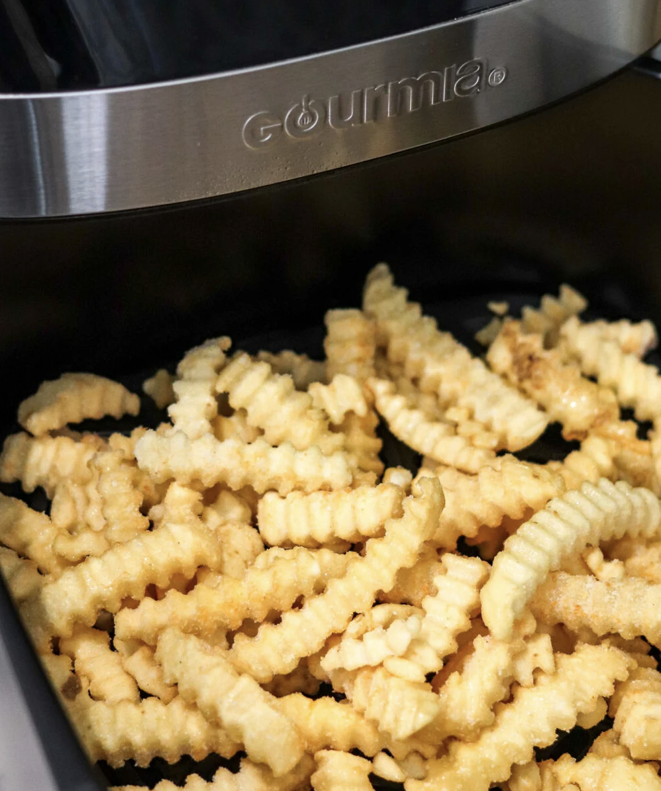

Air Fryer French Fries

Description
Frozen French fries are a quick and convenient side to throw into the air fryer! Air Fryer Frozen French Fries cook super fast and turn out perfectly crispy every time!
Try the fries with Air Fryer Wings!
Ingredients
- 32 ounce bag frozen french fries
- oil spray
- 1/2 teaspoon salt
Instructions
- If using the whole bag, spray some oil in the bag using and oil sprayer, then add salt, seasoning salt, or cajun seasoning for a kick! Pour into air fryer basket. If using a portion of the bag, add them to the air fryer basket and spray with oil and sprinkle salt into the basket on top of the fries.
- Close the air fryer basket and set the air fryer to 400 degrees and cook for 8 minutes. Open the basket and shake the fries. Close the air fryer then set for 3 more minutes.
*Check doneness at this point, if more time is needed add 1-2 more minutes (various brands will differ in cooking time). I do NOT pre-heat my air fryer, but if you do, you may need to subtract 1-2 minutes from the cooking time.
- Remove carefully from Air Fryer and serve with your favorite meal and sauce!
Disclaimer: recipe copied from The Domestic Superhero website for the sole purpose of completing this project, no copyright infringement intended.